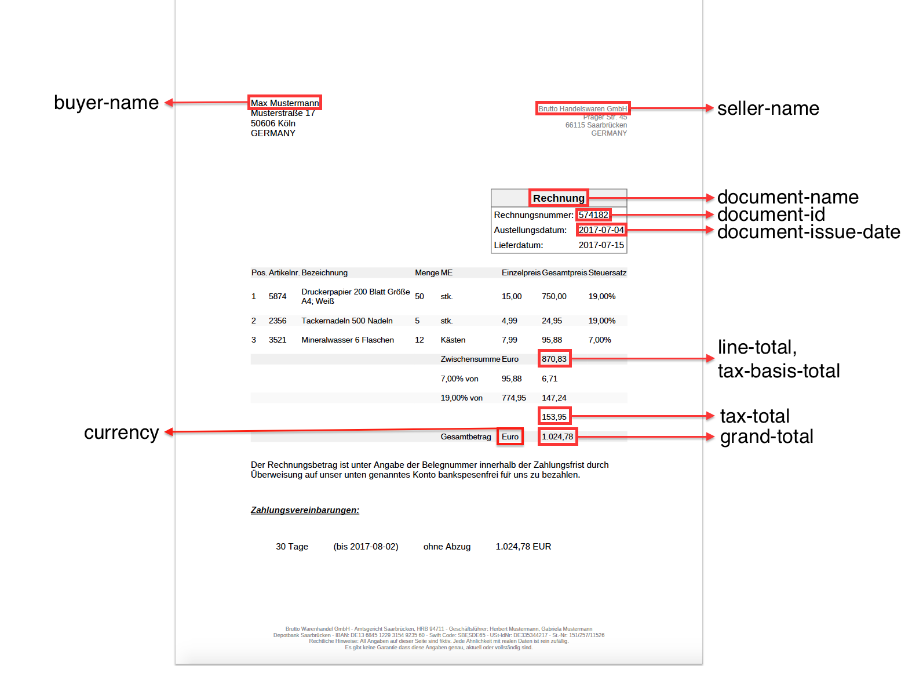

Einleitung
Das PDFreactor ZUGFeRD Add-on für E-Invoicing stellt eine JavaScript API bereit, mit deren Hilfe auch ohne tiefergehende Kenntnis des ZUGFeRD-Formats aus bestehenden, menschenlesbaren Belegen automatisch entsprechende maschinenlesbare strukturierte Daten im von ZUGFeRD verwendeten XML Format erzeugt werden können.
Erstellen eines ZUGFeRD Dokuments aus einem bestehendem Beleg
In diesem Tutorial schauen wir uns an, welche Schritte nötig sind, um für einen bestehenden Beleg ein zugehöriges ZUGFeRD Dokument zu erzeugen.
Dafür haben wir eine Modell-Rechnung vorbereitet, die wir als Ausgangsbasis für alle weiteren Schritte verwenden. Die Modell-Rechnung finden Sie hier.
Achtung: In diesem Beispiel gehen wir davon aus, dass der Beleg als HTML vorliegt und mit Hilfe der PDFreactor ZUGFeRD API das passende ZUGFeRD XML generiert werden soll. Bei anderen Anwendungsfällen wird aber ggf. der Beleg selbst bereits generiert, z.B. aus einer Datenbank. Hier wäre es denkbar, im gleichen Schritt auch die passende ZUGFeRD Konfiguration zu erstellen.
Verwendung der ZUGFeRD API
Grundsätzlich müssen mit Hilfe der API eine Anzahl von sogenannten ZUGFeRD Properties gesetzt werden, aus denen schließlich automatisch ein entsprechendes XML erzeugt wird.
Beispiel: Setzen eines ZUGFeRD Propertys auf einen Wert der per Query-Selektor aus dem Dokument ausgelesen wird.
ro.zugferd.set("document-name", document.querySelector("#invoiceData td").textContent);Zudem muss das Datumsformat festgelegt werden, das für das Eingabedokument verwendet wird. Das Datumsformat wird hier als Java Pattern angegeben.
Beispiel: Angabe des Eingabeformats für das Datum als Standardwert.
ro.zugferd.defaults = {
inputFormat: { dateFormat: "yyyy-MM-dd" }
};
ZUGFeRD Properties den Bereichen des Dokuments zuordnen
Erforderlich zur Erzeugung eines maschinenlesbaren ZUGFeRD Dokuments sind die Angabe des Eingabeformats für das Datum, sowie insgesamt 11 ZUGFeRD Properties.
Das untenstehende Schaubild zeigt an, wie die meisten dieser Properties dem Dokument zugeordnet werden können:

Erforderliche ZUGFeRD Properties
Wie in obigem Schaubild zu sehen ist, können von den 12 erforderlichen ZUGFeRD Properties hier lediglich 10 aus dem Dokument ausgelesen werden.
Folgende Properties sind zwingend erforderlich (weitere Informationen zu den einzelnen Properties finden Sie auch in der Property Dokumentation):
zugferd-profile- Profil der ZUGFeRD Rechnung. Möglich sind
basicundcomfort. currency- Die Währung des Dokuments als Code z.B. EUR.
document-id- Die Rechnungsnummer.
document-name- Die Art des Dokuments, z.B. "Rechnung".
document-type- Der Typ des Dokuments als ZUGFeRD-Code. Im
basicProfil ist nur380erlaubt. document-issue-date- Das Rechnungsdatum.
seller-name- Der Name des Verkäufers.
buyer-name- Der Name des Käufers.
line-total- Gesamtbetrag der Positionen.
tax-basis-total- Steuerbasisbetrag.
tax-total- Steuergesamtbetrag.
grand-total- Bruttosumme.
Die im Schaubild fehlenden Properties sind zugferd-profile und document-type. Diese beiden Properties können in der Regel
nicht als solche aus dem Beleg ausgelesen werden: Die wenigsten Belege werden ein Feld enthalten, welches ZUGFeRD-Profil verwendet werden soll,
oder den Beleg-Typ als ZUGFeRD-Code angeben.
Im Falle von zugferd-profile ist es akzeptabel, das gewünschte Profil einfach direkt als String-Wert zu übergeben:
ro.zugferd.set("zugferd-profile", "basic")Der für document-type erforderliche ZUGFeRD-Code kann zwar nicht direkt aus dem Dokument ausgelesen werden, für diesen Fall stellt die
die ZUGFeRD API aber die addMapping Methode bereit, mit der ein Wert auf einen anderen gemappt werden kann. So können wir den Wert
"Rechnung" auf den zugehörigen ZUGFeRD Code "380" mappen und auch aus dem Dokument auslesen:
ro.zugferd.addMapping("Rechnung", "380");
ro.zugferd.set("document-type", document.querySelector("#invoiceData th").textContent);Zu beachten ist hier, dass in diesem Fall alle Vorkommnisse des Werts "Rechnung" mit "380" ersetzt würden, einschließlich unseres Dokumentnamens (document-name).
Da wir "380" nicht als Dokumentnamen wünschen, müssen wir das Mapping für document-name ausschalten:
ro.zugferd.set("document-name", invoiceData[0].querySelector("th").textContent, {
ignoreMapping: true
});Mindestkonfiguration
Die Mindestkonfiguration, die zur Erzeugung eines ZUGFeRD XML für dieses Dokument nötig ist, sieht dementsprechend wie folgt aus:
// Datumsformat für das Eingabedokument festlegen
ro.zugferd.defaults = {
inputFormat: { dateFormat: "yyyy-MM-dd" }
};
// Mapping des ZUGFeRD Codes für Rechnung, da der Code an sich nicht im Dokument vorkommt
ro.zugferd.addMapping("Rechnung", "380");
// Festlegen des verwendeten Profils
ro.zugferd.set("zugferd-profile", "basic");
/*
* Im Beispieldokument werden die folgende Werte alle aus Elementen ausgelesen, die
* in dem Container mit der ID "invoiceData" vorkommen.
*/
var invoiceData = document.querySelector("#invoiceData table").tBodies[0].children;
ro.zugferd.set("document-name", invoiceData[0].querySelector("th").textContent, {
ignoreMapping: true
});
ro.zugferd.set("document-type", invoiceData[0].querySelector("th").textContent);
ro.zugferd.set("document-id", invoiceData[1].querySelector("td:nth-child(2)").textContent);
ro.zugferd.set("document-issue-date",
invoiceData[2].querySelector("td:nth-child(2)").textContent);
// Name des Käufers und Verkäufers
ro.zugferd.set("buyer-name", document.querySelector("#buyerName").textContent);
ro.zugferd.set("seller-name", document.querySelector("#sellerName").textContent);
// Währung
ro.zugferd.set("currency", document.querySelector("#waehrung").textContent);
// Beträge und Steuern
ro.zugferd.setFromSelector("tax-basis-total", "#taxBasis");
ro.zugferd.setFromSelector("tax-total", "#taxTotal");
ro.zugferd.setFromSelector("line-total", "#taxBasis");
ro.zugferd.setFromSelector("grand-total", "#grandTotal");
Wir haben eine Version des Rechnungsbelegs vorbereitet, die bereits die hier angeführte JavaScript-Konfiguration enthält. Dieses Dokument enthält somit die mindesterforderliche ZUGFeRD Konfiguration, um ein ZUGFeRD XML erzeugen zu können.
Dieses Dokument finden Sie hier.